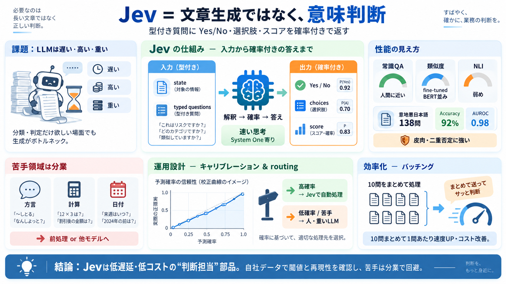

入力（Input）
state / typed questions（型付き）

Jevは日本語で“意味判断”を確率付きで返すモデルです。文章を生成せず、型付きの質問に対してYes/No・選択肢・スコアだけを返します（判断担当）。
通常のLLMは連続した文章を生成するため、低遅延・低コストの設計に不利です。分類や判定だけ欲しい場面でも、生成がボトルネックになりがちです。
Jevは「状態（state）」と「型付き質問（questions）」を受け取り、文章生成ではなく判断結果を返します。出力はYes/No、選択肢、スコア（確率付き）に限定されます。
“速い思考（System One）”の位置づけに近く、やることは「解釈→確率→答え」です。長文生成の工程を省くことで、実効速度とコストを狙います。
JGLUE（日本語ベンチマーク）の3タスクで、得意・不得意が分解されています。常識QAはほぼ人間近く、類似度はfine-tuned BERT並み、含意推論は一段落ちます。
“意地悪日本語”138問（人手ラベル）で検証し、92%正解・AUROC 0.98を達成しました。皮肉、二重否定なども比較的強い結果です。
外した11問の傾向は、方言読解、計算（割引率→金額比較）、日付解釈です。性能は一枚岩ではなく、入力形式・言語現象の影響を受けます。
確率がどれくらい当たるかを校正曲線で検証し、閾値設計に使える形にしています。例えば0.9以上に絞ると正解率が上がる、といったゲート根拠を提示します。
キャリブレーション済み確率があるため「自信があるものだけJevで処理」「残りを人や重いLLMへ」のゲート設計がしやすいです。誤判定コストを下げる設計に直結します。
1問ずつと比べて、1リクエストで10問まとめると“1問あたり”の実効レイテンシとコスト効率が大きく改善します。通信・オーバーヘッドが償却されるためです。
精度が高くても、任意ドメイン・任意表現で同等に“信用”できるとは限りません。自社データで閾値・再現性（特に方言・比喩・領域用語）を必ず確認する必要があります。
（※入力データの検証にはサンプル規模の限界があり、一般化は追加確認が必要）
Jevは「文章生成」ではなく「意味判断を確率で返す」ため、低遅延・低コストの分類/判定に組み込みやすいです。確率のキャリブレーション、routing、バッチング、前処理（計算/日付）で実用性を最大化できます。
No references found